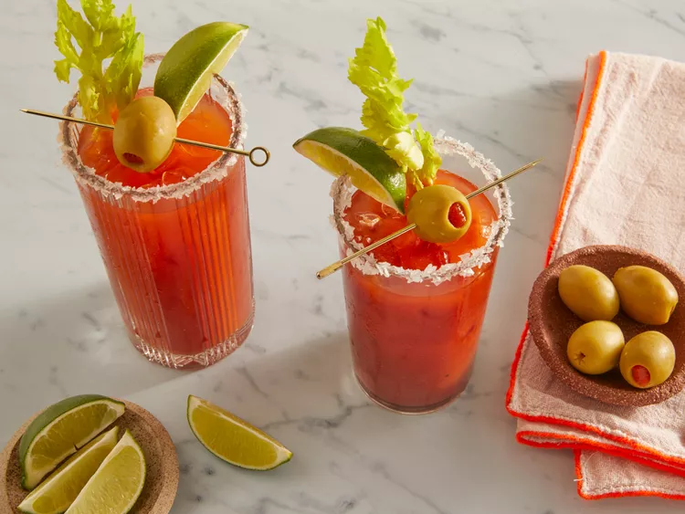

Bloody Mary

Description
A Bloody Mary is easy to make from scratch with vodka, tomato juice, and a few other simple ingredients. The spicy, salty, and savory taste of this classic cocktail makes it perfect for brunch or other afternoon gatherings.
Ingredients
- Tomato Juice
- Vodka
- Worcestershire Sauce
- Hot Sauce
- Salt and Pepper
- Garnishes
Steps
- Pour salt onto a small plate. Moisten the rim of a glass and press into the salt. Fill the glass with ice cubes.
- Fill a cocktail shaker with ice cubes; add vegetable juice cocktail, vodka, Worcestershire sauce, hot pepper sauce, salt, and pepper. Cover and shake until the outside of shaker has frosted, about 20 seconds.
- Strain Bloody Mary into the prepared glass. Garnish with celery stalk and olives.